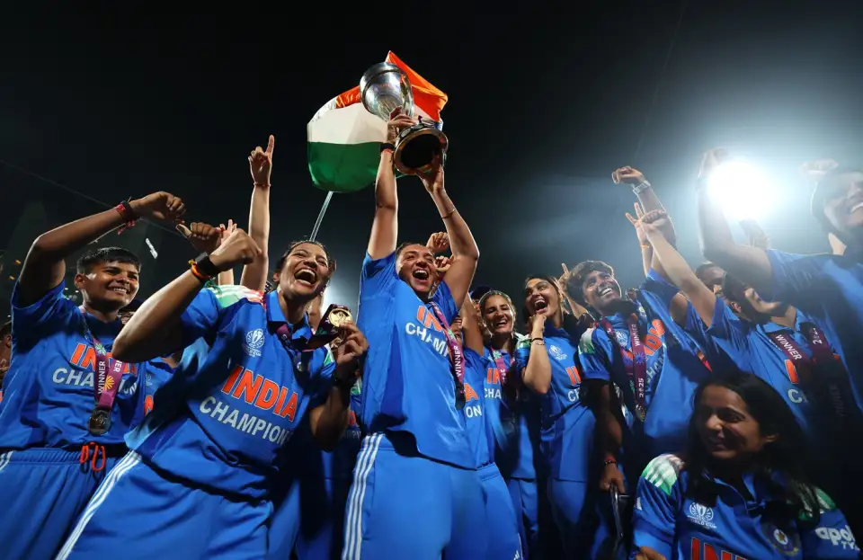

The ICC Women's Cricket World Cup is the quadrennial international championship of the One Day International format with 50 overs per team. It is organised by the International Cricket Council.
Until 2005, when the two organisations merged, it was administered by a separate body, the International Women's Cricket Council. The first World Cup was held in England in 1973, two years before the inaugural men's tournament. The event's early years were marked by funding difficulties, which meant several teams had to decline invitations to compete and caused gaps of up to six years between tournaments. However, since 2005, World Cups have been hosted at regular four-year intervals.
Qualification for the World Cup is through the ICC Women's Championship and the World Cup Qualifier. The 1997 edition was contested by eleven teams[1] and since then no new teams have debuted in the tournament. Since 2000 the number of teams in the World Cup has been fixed at eight. However, in March 2021, the ICC decided that the tournament would expand to 10 teams from the 2029 edition.[2][3] The thirteen World Cups played have been held in five countries, with India and England having hosted the event three times. Australia is the most successful team, having won seven titles and failing to make the final on only four occasions. England (four titles), New Zealand and India (one title each) are the only other teams to have won the event, while the West Indies and South Africa (once each) have each reached the final without going on to win.
